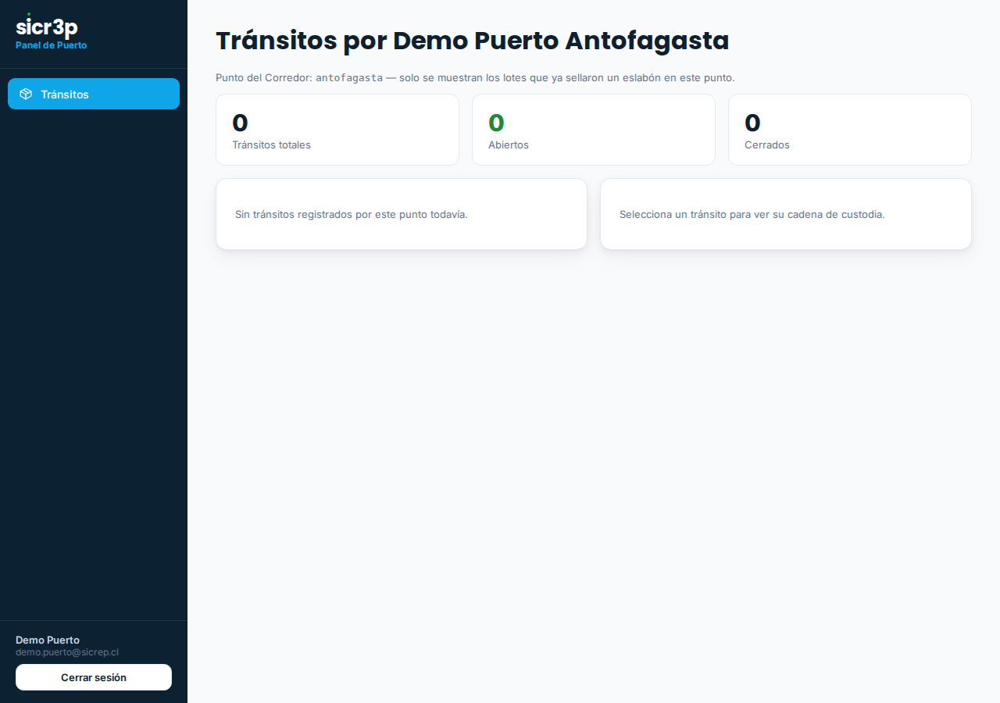

2. Así se ve cada rol

Agencia (ámbar): expedientes asignados y captura documental.

Trazador (rojo): cruces de un RUT autorizado — sesiones, quién le emite, a quién le emite.

Proveedor (turquesa): lotes pendientes de firma, con formulario en línea.
Puerto, mandante, agencia de aduana, proveedor y trazador: cada actor de la cadena entra a su propio panel, ve exactamente lo suyo — y nada más — y alimenta la misma cadena de integridad. El aislamiento no es una limitación: es la garantía que hace posible que competidores convivan en la misma plataforma.
| Panel | Quién entra | Qué ve | Qué NO ve |
|---|---|---|---|
| Puerto | El operador del puerto | Los tránsitos que sellaron un eslabón en SU punto del corredor, con cadena de custodia y expediente | Tránsitos de otros puntos |
| Mandante | La empresa que exige datos | El CO2e de SUS proveedores y sus exports (Alcance 3, CBAM) | Datos de proveedores ajenos |
| Agencia | La agencia de aduana | Los expedientes de las cargas que se le asignaron; captura documentos y mueve el semáforo | Expedientes de otras agencias |
| Proveedor | El generador de la carga | Los lotes que se le asignaron para firmar (con llave física FIDO2 opcional) | Todo lo demás |
| Trazador | Un tercero autorizado | Los cruces comprador-vendedor SOLO de los RUT que el administrador le autorizó | Cualquier otro RUT |
No es un filtro de pantalla: cada sesión lleva su panel y su entidad grabados en el token, y el servidor filtra cada consulta por esa entidad. Un puerto no puede pedir datos de otro punto ni construyendo la URL a mano. Cada panel tiene además su color de identidad, para que el operador siempre sepa dónde está.

Panel de Puerto (azul): tránsitos del propio punto, con estados y cadena de custodia.
Agencia (ámbar): expedientes asignados y captura documental.
Trazador (rojo): cruces de un RUT autorizado — sesiones, quién le emite, a quién le emite.
Proveedor (turquesa): lotes pendientes de firma, con formulario en línea.
El mandante que prefiere integrar sus sistemas usa la API con clave (encabezado X-Api-Key) para los mismos datos de su panel — proveedores, Alcance 3, CBAM — y puede suscribir un webhook para recibir eventos en su propio sistema.
sicr3p SpA · Antofagasta, Chile
contacto@sicrep.cl · www.sicr3p.cl
sicr3p — Carpeta de servicio: Red de actores · Versión 1.0 · Agosto 2026 · Material informativo comercial. Capturas con datos de demostración. sicr3p no es certificador, auditor ni autoridad.